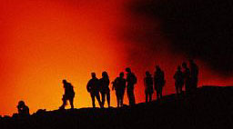

Think
of Islam what you will -- its presence in what used to be Persia may have a
downside. For the coming of Islam actually marks the beginning of the End of
Days. In fact, we may be about to drown in molten metal. That's at least what
God told the Persian prophet Zarathushtra some 3,000 years ago.
Long
before Islam, long before Christianity, there was Zoroastrianism: an ancient
Persian religion, based on the mystic writings of the prophet Zarathushtra.
Now God (Ahura Mazda in Zoroastrian) told Zarathushtra a lot of stuff. Among
things, God told the prophet in detail how the world will end. Here's the full
story.
Also,
the entire world will look different. The Sun is more often unseen and is
spotted, harvests will be bad, and years, months and days are one third
shorter. Strangely, countries will be full of highways. Humans have also
changed. They are born smaller and weaker, and talk a lot of good deeds, but
do the adversary. The world is covered with `dead matter': everywhere you go,
you step on it. No wonder almost everyone living in this wicked world goes
straight to hell after death.
But
wait. Then, suddenly, weird and cataclysmic things start happening.
There are notable more earthquakes and devastating storms. There are signs on
the Sun, and the moon suddenly becomes colored. From the Balkans, an army with
`red weapons, red banners and red hats' emerges. The army wages war on Greece
-- and wins. It's the beginning of a series of wars, in which Arabs, Turks and
the Balkans play prominent roles. But there are no good guys around, the one
army is as evil as the next.
Gladly,
help is underway. Somewhere in Asia (China or India, Zarathustra suggests), a
prince is born. The prince's mother is a virgin, and the birth is marked by
yet another divine signal: at the moment of birth, a star falls from the sky,
for everyone to be seen.
By
the time the prince ages thirty, he gathers an enormous army around him, with
flags striped like tiger skins. The prince leads his army to Iran and defeats
all the bad guys, demonic invaders included. He knows how to take care of
business: `They will slay so that a thousand women can afterwards see and
kiss, but one man', Zarathushtra says.
But
the prince's victory really pisses off the general manager of the demons,
Evil itself. The devil summons yet another army, consisting of the `vilest
races of demons and wrath', and goes to Iran.
Of
course, Ahura Mazda doesn't leave this unanswered. He sends in an angel called
Neryosang and another godly creature called Srosh the righteous. Together with
150 faithful men, and under the leadership of a prophet called Peshotan, the
prince goes out to restore religion. They bless everyone they meet, consecrate
every pool of water they pass, and every now and then, they kick ass when they
come across a demon or an evil race.
Meanwhile,
Ahura Mazda keeps sending in more troops. He descends to the mountain of
Hukairya with his archangels, and tells them to join Peshotan. From his
mountaintop, Ahura Mazda gives away a thundering pep-talk to the troops. It
scares the hell out of the devil. Shocked, he `flees back to the darkest
recess of hell', avoiding battle with the armies of God. Score 1-0 in favour
of Ahura Mazda.
But
evil isn't quite defeated yet. Another thousand years pass, and
steadily, the devil makes a comeback. Once more, the world becomes corrupted.
People grow more and more wicked, and religion is contaminated with evil and
malpractice again. Then, one day, God decides it's time for another savior.
So
here we go once more. Somewhere in the East, a virgin takes a bath and becomes
miraculously impregnated. She gives birth to messiah number two, a chap named
Aushedar. At the age of thirty, Aushedar sees the light and receives the
Zoroastrian religion directly from Ahura Mazda himself. Aushedar commands the
Sun to halt, and indeed it does: for ten days and ten nights, the Sun just
sits there in the sky.
And
if you think that's miraculous, wait what happens next. From every corner of
the world wolves come running to Iran. There, they melt together into a
gigantic, hideously looking, demonic Super wolf. The beast is 433 paces long
and stretches 415 paces across. Now that's what you call a wolf!
Oh,
not Aushedar. Rapidly, the savior gathers an army of Ahura Mazda-worshippers
around him, battles the wolf, and kicks it back into hell. Phew!
And
that's about all Aushedar has to do. Everyone is so impressed that all humans
hastily decide not to flirt with Mr. Evil anymore. En masse, they give the
devil the finger, and convert to the good religion of Ahura Mazda again.
Grudgingly, the Devil retreats into darkness once more. 2-0 for God.
Another
thousand years pass, and although evil is groggy and weakened by now, it's
still around. From the Balkans and from the East, new armies roll in. Again
they conquer Iran, and again Ahura Mazda sees his religion corrupted and
degraded. The world has undergone some remarkable changes by now. For one
thing, people no longer need to eat to stay alive.
But
Ahura Mazda has really had it with the Devil. He decides to send in a
third messiah and bring about the end of the world. In Iran, a beautiful
virgin takes a bath in lake Kansaoya -- and, oh wonder, she becomes pregnant.
The
third savior is born and finds out he is, other than the preceding saviors, a
direct descendant of Zarathushtra himself. Saoshyant, is the name of messiah
number three. And it is clear he will be the last messiah in a row: while he
still is a young man, some very odd things start to happen.
For
one thing, all the dead begin coming back to live. One after another, they
crawl out of their graves with brand new bodies. All in all, the whole process
lasts 57 years. Everyone who died as a youth will be aged eighteen forever,
everyone who died as an adult will be forty for eternity.
Oh,
that's nice, you think. But wait. Ahura Mazda didn't resurrect the dead
for fun. For the next moment, a huge, holy comet plummets into the earth.
Boom! The comet hits the earth `like a wolf jumping a sheep', Ahura Mazda
tells Zarathushtra.
The
comet melts all mountains and ploughs open the earth's crust, exposing all the
metal in the world, and melting that too. A super hot tidal wave of molten
metal races across the entire planet. Before you can say `Ahura Mazda', you're
swimming in liquid steel.
But
it's a wave of judgment, really. The molten metal takes the shape of a river,
and everyone has to cross it. Whoever was evil in life suffers terrible pains.
The more you did wrong, the more you suffer. But what the heck: in the end,
you'll find out you're truly purified of sin. The molten metal literally burns
away every scratch of evil from your soul. O, and by the way: if you were
already pure of heart, you survive the wave without any problem at all. The
molten metal will feel like warm milk, as Zarathushtra puts it.
So
the earth is a nice place to be again. Mankind is purified, families reunite,
and there's love and peace all over the place. Happy endings? No, not yet.
There's one nasty little job left. For once and for all, mankind has got to
get rid of evil.
So
before you know it, it's war again. In the sky, angels battle against
demons, and on earth, men battle against, well, more demons. Of course,
Saoshyant and his good guys win. The devil and everything he ever created --
except the darkness of the night! -- is kicked off the planet. Everything
mankind considers evil is thrown back into where it came from: hell.
And
that isn't it. Now, Ahura Mazda himself comes into action. He picks up hell,
and tosses it into the metal river, all demonic inhabitants included. Hell
burns up. When it's done, there's nothing left but a purified stretch of
peaceful countryside. Ahura Mazda fits the land that used to be hell in into
the world, enlarging our planet quite a bit.
Finally,
it's heaven on earth. Men will live forever, without wars, without any
problem. They will not have to eat or drink. They accept the will of God
joyfully. Even the land is more peaceful than ever: there are no more
mountains or slopes, just green, beautiful pastures. Welcome to the Brand New
Earth, the world according to Ahura Mazda!
So...
should we worry?
Zarathushtra's
visions were a big hit: Zoroastrianism instantly became the hottest religion
in Persia, and remained all-important for many centuries to come.
Interestingly, many elements of Zarathushtra's writings trickled down into the
texts of Christianity, Judaism and Islam. Not only was Zoroastrianism the
first monotheistic religion, Zarathushtra was the first to introduce the
doctrines of final judgment and the coming of a messiah to save humanity from
evil. Let alone those striking parallels between the birth of Christ and the
birth of the Zoroastrianist messiah's!
Zarathushtra's
prophecy, if taken literally, has some interesting features to it. Indeed, the
religion of Ahura Mazda has gone into oblivion because of hostile people
invading Persia. In 651 or 652 AD Muslims conquered Persia, and in the ninth
century, Zoroastrianism was effectively banned. By now there are some 100,000
Zoroastrianists left, mostly in India, where a small colony of Zoroastrians
took refuge long ago. And yes, there have been `red armies' in the Balkans.
Oh, and there are plenty of highways running through Iran.
Some
people indeed take Zarathushtra's prophecies for real. A peculiar
spin-off from Zoroastrianism is the Baha'i faith, which claims its founder
Baha'u'llah in fact is the messiah Saoshyant. According to some Zoroastrian
scriptures Saoshyant would be born `when a thousand two hundred and some years
have passed from the inception of the religion of the Arabian'. Now the
Islamic calendar begins in the year 622 AD, so Saoshyant's birth must be
somewhere in the mid-1800s. And hey, look who was born in the mid-1800s? You
guessed it: Baha'i's founding father, Baha'u'llah.
So
it can't be long before we are purified by this awesome river of molten metal,
right? Oh, come on! For one thing, Ahura Mazda told Zarathushtra he would
bring about the end of time in three thousand years. But since Zarathushtra
lived some 1,000 or 600 years before Christ, at least some of the predictions
should already have come true.
But
days and years are definitely not one third shorter. People still need
food (well, at least Exit Mundi does). And last but not least: although some
Christian extremists think otherwise, it is WAY out of line to say Islam is a
`vile religion' run by demons.
A
more down to earth reassurance we won't have to bathe in molten metal before
long pops up when you have a closer look at the historic context of the
Zoroastrian apocalyptic. There are many different versions of Zarathushtra's
vision -- it took Exit Mundi weeks of reading to come up with the scenario of
doom and destruction outlined above. In one version, the first two saviors are
nameless figures. In other texts, there is yet another savior, a guy by the
name of Aushedar-mah.
The
reason for all confusion is that the Zarathushtra scenario was rewritten over
and over again by later generations of Zoroastrianists. As their religion
became persecuted in the ninth century, the apocalyptic became very important
in Zoroastrianism. Ahura Mazda-worshippers everywhere in Persia clung to their
apocalyptic writings for comfort, its bottom line being that eventually,
Zoroastrianism will win. Zoroastrianists thus elaborated on the story, filling
in many details and coming up with completely new predictions of the
apocalypse to come.
In that respect, taking the Zoroastrian end of days too seriously would be much like believing in Father Xmasses or Boogie Men. Well, at least that's Exit Mundi's opinion on matters. And when that big, mean river of molten metal arrives after all, oh boy, will we suffer!